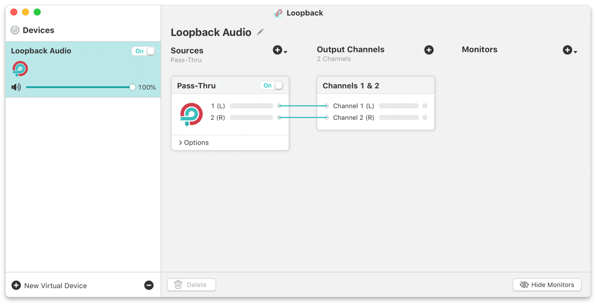
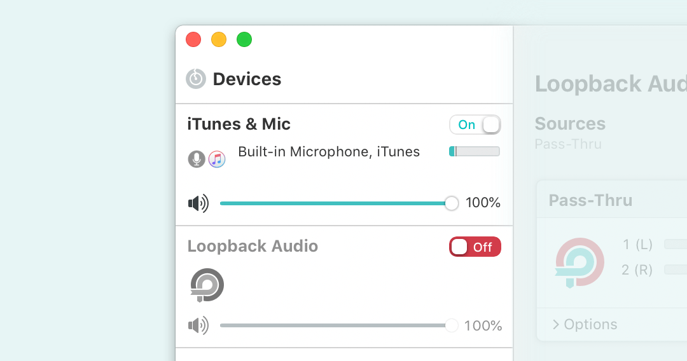

Virtual Audio Device Basics
With Loopback's virtual audio devices, you can route audio around your computer in powerful new ways. These virtual devices appear throughout your system in the same way as physical devices, like microphones or speakers do. Let's begin by discussing the basics of how virtual audio devices work.
Loopback at Startup

Loopback's main window at initial launch
Loopback has a single main window which lists all of your current virtual audio devices in the device list on the left side. When you first launch Loopback, you'll see the Loopback Audio device. This default device is automatically created and enabled when you first install Loopback.
Creating and Deleting Virtual Audio Devices
Controls for adding and removing virtual audio devices
To create a new virtual audio device, just click the (+) New Virtual Device button in the lower left corner of Loopback's main window. When you do, a new device will appear in the device list, already enabled and ready for further configuration as desired.
To delete a virtual audio device entirely, highlight it in the list, then click the (-) button. Note that device deletion can't be undone. You can, of course, create a new device.
Rather than permanently deleting a device, you may instead wish to temporarily disable it.
Adjusting the Device Name
To adjust a virtual audio device's name, click the device in the Devices list on the left side of Loopback's main window to select it. Once the device is selected, you'll be able to edit its name at the top of the Device Editor area on the right side of Loopback's main window. Click the Edit pencil, then type the new name, and press Return or click away to finalize the change.

The Name field for a Loopback device
This name affects how the device will appear in audio input selectors throughout the system. Note that some applications may not immediately detect the new name. Toggling the virtual audio device off then back on in Loopback should cause the new name to be shown everywhere. If the old name still persists in an application, quit and relaunch that app to get the new device name to appear.
Enabling and Disabling Virtual Audio Devices

The “iTunes & Mic” device is enabled;
The “Loopback Audio” device is disabled
Newly created virtual audio devices are enabled by default, so that they can be used immediately. To disable a device, toggle the On/Off switch next to its name in the device list. To re-enable the device, toggle the slider back on.
It may be useful to think of disabling a virtual audio device as the equivalent of unplugging a physical device from your computer. Likewise, enabling a virtual device is the equivalent of plugging a physical device into your computer.
Set It and Forget It
The Loopback application does not need to be running for your virtual audio devices to appear throughout the system. Once you’ve created and configured things in Loopback, you can quit the app. The virtual audio device will persist, even across machine restarts.
Configure Your Devices
Next, learn how to configure your devices by reading the three pages in this manual's “Device Configuration” section. You'll see how to set which audio sources a virtual device pulls in, as well as how to adjust the number of output channels it has (as well as how they're configured), and how to optionally monitor audio coming through the virtual device.